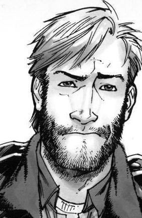

Séries de Televisão
Fonte: Wikipédia
The Walking Dead
The Walking Dead é uma série de histórias em quadrinhos publicada nos Estados Unidos pela Image Comics de 8 de outubro de 2003 à 3 de julho de 2019. A história foi criada e escrita por Robert Kirkman e desenhada por Tony Moore, que foi substituído por Charlie Adlard a partir da edição número 7, mas Tony continuou a desenhar as capas até a edição número 24. A série não teve grandes vendas durante seu lançamento, mas ganhou grande popularidade com o tempo. Em 2006, a primeira tiragem da trigésima terceira edição da série esgotou em apenas 24 horas. Em 2010, a série em quadrinhos foi adaptada como série de televisão pelo canal AMC, e no mesmo ano ganhou o prêmio Eisner Award de Melhor série contínua, anunciado na San Diego Comic-Con. A série é focada em um grupo de sobreviventes que lutam para superar o caos de um apocalipse de zumbis. Embora na realidade a causa do aparecimento dos zumbis não seja totalmente revelada, o enredo permite sentir o desenvolvimento humano e pessoal dos personagens e as formas de enfrentar o panorama de perseguição, destruição e morte causado pelos zumbis, conhecido pelos personagens como caminhantes, errantes, bichos ou mordedores, mas a palavra zumbi nunca é usada para descrevê-los. De acordo com Robert Kirkman, isso ocorre porque dentro do mundo de The Walking Dead não existiu filmes, quadrinhos, videogames, livros ou qualquer coisa do gênero mencionando a criatura zumbi.
A série em quadrinhos foi lançada no Brasil em 2006 pela HQM Editora em edições encadernadas com o título Os Mortos-Vivos. Ela segue os mesmos moldes das encadernações americanas, porém ao final de cada volume eles colocam as capas originas da série e um posfácio escrito por um convidado. Em 2012, após o crescente sucesso da série de televisão, a editora lançou uma revista mensal com o título original The Walking Dead. A editora publicou 18 volumes encadernados entre 2006 e 2015 e 48 edições mensais da revista entre 2012 e 2017. Ainda em 2017, o título foi adquirido pela Panini Brasil Ltda, que está publicando encadernados de onde a HQM Editora parou e também publicando encadernados começando do número 1 da revista.
The Walking Dead

| Editora(s) | Image Comics |
|---|---|
| Autor(es) | Robert Kirkman |
| Desenho |
Tony Moore Charlie Adlard |
| Gênero | Ficção científica, terror, drama, aventura, ação |
| Início | 8 de outubro de 2003 |
| Encerramento | 3 de julho de 2019 |
| N.º de edições | 193 |
Premissas
The Walking Dead centrado em Rick Grimes, um vice-xerife da Geórgia que é ferido durante um tiroteio e acaba em coma. Quando ele acorda, ele percebe que está em um mundo devastado por mortos-vivos que só desejam devorar todos os seres vivos que cruzam seu caminho. Sem saber o que aconteceu ao seu redor, Rick sai em busca de sua família. Em Atlanta, ele conhece um grupo de sobreviventes, que por coincidência inclui sua esposa e filho. Aos poucos ele assume o papel de líder do grupo e com o progresso da série, os personagens tornam-se mais desenvolvidos e suas personalidades são demonstradas sob a tensão de um apocalipse zumbi, especialmente a de Rick.
Personagens
Rick Grimes  Rick Grimes é um personagem fictício da história em quadrinhos em preto e branco The Walking Dead, sendo interpretado por Andrew Lincoln na série de televisão de mesmo nome e na série derivada Fear the Walking Dead, numa participação especial. , é o protagonista, um policial que está em coma quando o apocalipse zumbi começa. Com sua esposa Lori e filho Carl, ele se junta a grupos com outros sobreviventes. Entre alguns personagens notáveis da série estão: Shane, ex-melhor amigo de Rick que secretamente mantém uma relação sexual com Lori; Andrea e sua irmã Amy; Glenn, um entregador de pizza; Dale, um vendedor de carros; Carol e sua filha Sophia. Ao longo da história vão aparecendo mais personagens apresentando a narrativa de suas próprias histórias como Tyreese, Michonne e o Governador.